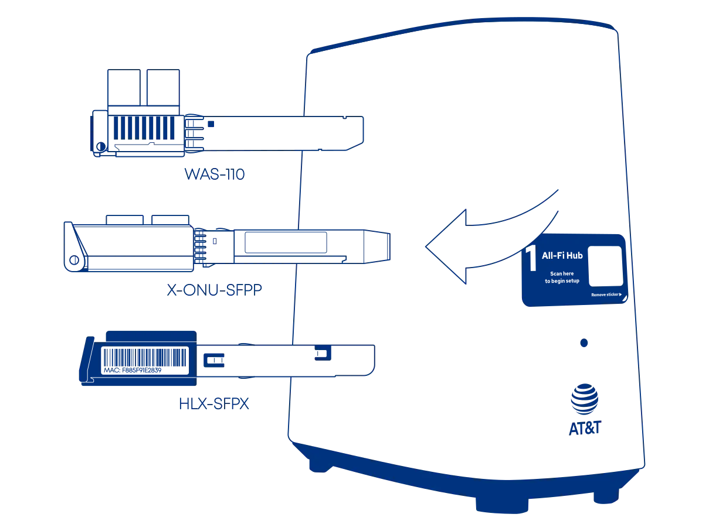

Masquerade as the AT&T Inc. BGW620-700 with the WAS-110 or HLX-SFPX¶

New installations
Keep the BGW620-700 in active service for roughly a week or two until fully provisioned and the installation ticket has been closed.
Common misconceptions and answers
- Can I take an SFP+ module provided by AT&T and plug it directly into my own router or switch?
-
No, the AT&T supplied SFP+ module is only a physical-layer transceiver compliant with XGS-PON (ITU G.9807.1). It lacks ONT management (ITU G.988), meaning it cannot function as a standalone ONT.
- Do the WAS-110 or HLX-SFPX ONTs support GPON wavelengths, specifically 1490 nm downstream and 1310 nm upstream?
-
No, the BOSA in these ONTs is calibrated exclusively for XGS-PON wavelengths: 1577 nm downstream and 1270 nm upstream. They use the Macom M02180 (WAS-110) and Semtech GN28L96 (HLX-SFPX) laser drivers, which are designed specifically for 10G-PON applications.
- Is the WAS-110 or HLX-SFPX a router?
-
No, the WAS-110 and HLX-SFPX are NOT substitutes for a Layer 7 router. They are ONTs, and their sole function is to convert Ethernet to PON over fiber. Additional hardware and software are required for internet access.
Determine if you're an XGS-PON subscriber¶
2 Gbps or higher tiers
If you're subscribed to 2 GIG speed or a similar 2 Gbps or higher tier, skip past to Purchase a WAS-110 or HLX-SFPX ONT.
There are two (2) methods to determine if you're an XGS-PON subscriber. First, through the web UI Fiber Status page, and second, by inspecting the SFP transceiver.
with the web UI recommended¶
{kind=link}
- Within a web browser, navigate to http://192.168.1.254/cgi-bin/fiberstat.ha
- Check the status listing for the Wave Length value. A reading of 1270 nm indicates an XGS-PON subscription.
with the transceiver¶
- Identify the bale clasp color. If orange/red, proceed.
- Engage the bale clasp to release the latch and pull out the transceiver.
- Inspect label for XGS-PON or 1270 TX.
Purchase a WAS-110 or HLX-SFPX ONT¶
The WAS-110 and HLX-SFPX are available from select resellers worldwide; purchase at your discretion. We assume no responsibility or liability for the listed resellers.
-
WAS-110
-
HLX-SFPX
Install ONT firmware¶
Although not strictly necessary for AT&T, the 8311 community firmware is highly recommended for masquerading as the BGW620-700 and used for the remainder of the WAS-110 sections of this guide.
There are two (2) methods to install the 8311 community firmware onto the WAS-110, outlined in the following guides:
-
Method 1: recommended
-
Method 2
HALNy has provided a custom firmware with satisfactory customization for masquerading as the BGW62-700. It's available by request from HALNy and has been made available for download on the 8311 Discord community server.
{kind=link}
{kind=link}
- Within a web browser, navigate to https://192.168.33.1/ and, if asked, input the useradmin web credentials.
- From the main navigation System drop-down, click Flash Firmware.
- From the Flash Firmware page, click Choose Image, browse for
HLX-SFPX_V7-0-6t1.zip, and click Flash to proceed with flashing the firwmare. - Follow the prompts.
Configure ONT settings¶
Successful masquerading depends on the original ONT serial number and other identifiers (e.g., software versions), all available via your BGW620-700's fiber stats page:
http://192.168.1.254/cgi-bin/fiberstat.ha
Choose your preferred setup method: web UI or shell and carefully follow the steps to avoid unnecessary downtime and troubleshooting.
from the web UI recommended
As of version 2.4.0 https:// is supported and enabled by default
All http:// URLs will redirect to https:// unless the 8311_https_redirect environment variable is set to
0 or false.
{kind=link}
{kind=link}
{kind=link}
{kind=link}
-
Within a web browser, navigate to https://192.168.11.1/cgi-bin/luci/admin/8311/config and, if asked, input your root password.
-
From the 8311 Configuration page, on the PON tab, fill in the configuration with the following values:
All attributes below are mandatory
Attribute Value Remarks PON Serial Number (ONT ID) COMM… Equipment ID iONT620700X Hardware Version BGW620-700_2.5 Sync Circuit Pack Version 
Software Version A BGW620_5.31.9 Version listing Software Version B BGW620_5.31.9 Version listing MIB File /etc/mibs/prx300_1U.ini PPTP i.e. default value -
From the 8311 Configuration page, on the ISP Fixes tab, enable Fix VLANs from the drop-down.
-
Save changes and reboot from the System menu.
from the shell alternative
-
Login over secure shell (SSH).
ssh root@192.168.11.1 -
Configure the 8311 U-Boot environment.
All attributes below are mandatory
fwenv_set -8 gpon_sn COMM... fwenv_set -8 equipment_id iONT620700X fwenv_set -8 hw_ver BGW620-700_2.5 fwenv_set -8 cp_hw_ver_sync 1 fwenv_set -8 sw_verA BGW620_5.31.9 fwenv_set -8 sw_verB BGW620_5.31.9 fwenv_set -8 fix_vlans 1Additional details and variables are described at the original repository 1
/usr/sbin/fwenv_setis a helper script that executes/usr/sbin/fw_setenvtwice consecutively.The WAS-110 functions as an A/B system, requiring the U-Boot environment variables to be set twice, once for each environment.
The
-8option prefixes the U-Boot environment variable with8311_. -
Verify the 8311 U-boot environment and reboot.
fw_printenv | grep ^8311 reboot
{kind=link}
- Within a web browser, navigate to http://192.168.33.1/cgi-bin/luci/admin/system/halny-settings/ and, if asked, input the useradmin web credentials.
-
From the hidden HALNy Settings page, in the Custom values section, fill in the configuration with the following values:
All parameters below are mandatory
Parameter Value Remarks State Enable PON Serial Number COMM… Equipment ID iONT620700X Hardware Version BGW620-700_2.5 Sync Circuit Pack Version Enable Software Version A BGW620_5.31.9 Version listing Software Version B BGW620_5.31.9 Version listing -
Click Save & Reboot to apply the parameters.
Verify ONT connectivity¶
Do not be alarmed...
If you receive an e-mail and/or text informing you to:
Check your AT&T Fiber equipment since you might be offline currently.
The BGW620-700 sends telemetry data to better the customer experience.
Hot plug fiber cable¶
Avoid direct eye contact with the end of the fiber optic cable
After rebooting the WAS-110 or HLX-SFPX, safely remove the SC/APC fiber optic cable from the BGW620-700 and connect it to the WAS-110 or HLX-SFPX, confirmed by a double-clicking sound.
{kind=link}
- Navigate to https://192.168.11.1/cgi-bin/luci/admin/status/overview and, if asked, input your root password.
- From the PON Status section, evaluate that the RX Power and TX Power are within spec.
For troubleshooting, please read the Troubleshoot connectivity issues with the WAS-110 guide's Optical status section.
{kind=link}
- Within a web browser, navigate to https://192.168.33.1/ and, if asked, input the useradmin web credentials.
- From the main navigation Status drop-down, click PON Interface.
- From the Optical Information section, evaluate that the RX Power and TX Power are within spec.
Validate OLT authentication¶
Check for O5.1 PLOAM status
- Navigate to https://192.168.11.1/cgi-bin/luci/admin/status/overview and, if asked, input your root password.
- From the PON Status section, verify that the PON PLOAM Status is in an 05.1, Associated state.
For troubleshooting, please read the Troubleshoot connectivity issues with the WAS-110 guide's PLOAM status section.
Check for OLT associated VLAN filters
- Navigate to https://192.168.11.1/cgi-bin/luci/admin/8311/vlans and, if asked, input your root password.
- From the VLAN Tables page, if the textarea states "No Extended VLAN Tables Detected", the ONT configuration has not satisfied the OLT.
- Within a web browser, navigate to https://192.168.33.1/ and, if asked, input the useradmin web credentials.
- From the main navigation Status drop-down, click PON Interface.
- From the Link Information section, verify that the PLOAM State is 05.
Router tips¶
- Configure the WAN interface for DHCP mode.
- Clone the BGW620-700
 MAC address on the router's DHCP WAN interface to avoid waiting for the 20 minute lease to expire.
MAC address on the router's DHCP WAN interface to avoid waiting for the 20 minute lease to expire.
Software versions¶
The OLT can utilize the software version as a provisioning attribute. It is recommended to stay updated with the software upgrades of the BGW620-700 if the WAS-110 reports a fake O5 state.
The software version can be acquired by reconnecting the BGW620-700 and navigating to
http://192.168.1.254/cgi-bin/update.ha and replacing the X placeholders in the following string pattern with the
version number: BGW620_X.XX.X.
| Software Version | Release Date |
|---|---|
| 5.31.9 | 2025-02-13 |
| 5.31.8 | 2025-01-27 |
| 5.31.7 | 2025-01-11 |
| 5.31.6 | 2025-01-02 |
| 5.31.5 | 2025-01-02 |
| 5.31.4 | 2024-11-17 |
| 5.31.3 | 2024-11-17 |
| 5.31.2 | 2024-10-23 |
| 5.31.1 | 2024-10-05 |
| 5.30.9 | 2024-12-19 |
| 5.30.8 | 2024-11-15 |
| 5.30.7 | 2024-10-30 |
| 5.30.6 | 2024-10-20 |
| 5.30.5 | 2024-09-27 |